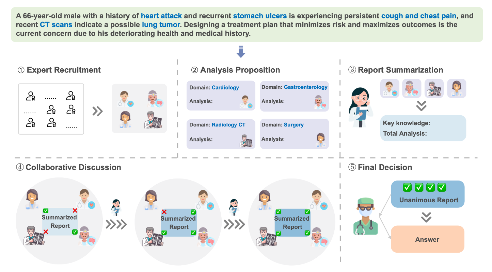
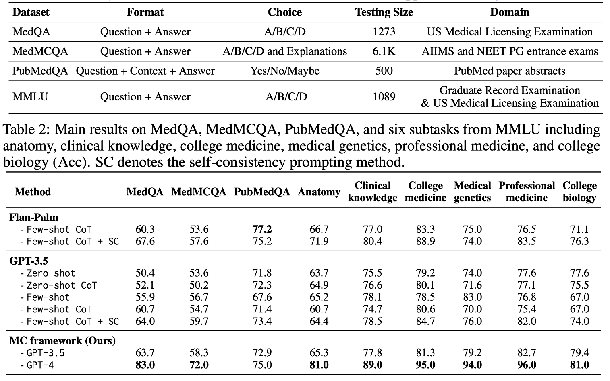
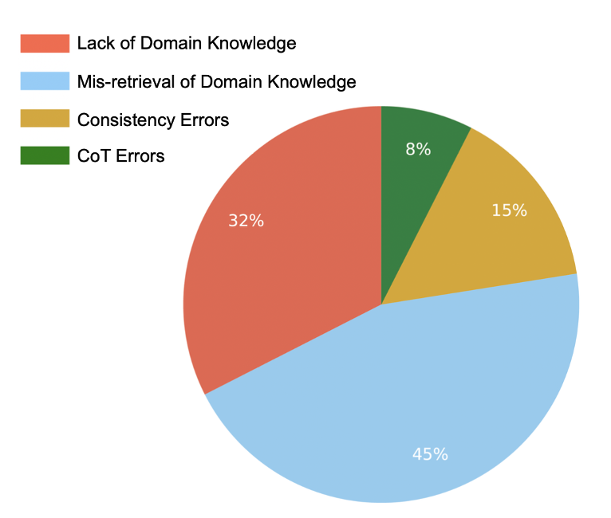

论文：MEDAGENTS: Large Language Models as Collaborators for Zero-shot Medical Reasoning
作者：Xiangru Tang, Anni Zou, Zhuosheng Zhang, Yilun Zhao, Xingyao Zhang, Arman Cohan, Mark Gerstein
大型语言模型(llm)尽管在各个通用领域取得了显著进展，但在医学和医疗保健领域遇到了重大障碍。该领域面临着独特的挑战，例如特定于领域的术语和对专业知识的推理。为了解决这些棘手的问题，我们为医学领域提出了一个新的多学科协作(MC)框架，该框架利用角色扮演的基于LLM的代理参与协作多轮讨论，从而提高LLM的熟练程度和推理能力。这个无需培训且可解释的框架包含五个关键步骤:收集领域专家，提出个人分析，将这些分析总结为报告，反复讨论直到达成共识，并最终做出决定。我们的工作特别侧重于零射击场景，我们在9个数据集(MedQA, MedMCQA, PubMedQA和MMLU的6个子任务)上的结果表明，我们提出的MC框架在挖掘和利用法学硕士的医学专业知识方面表现出色，并扩展了其推理能力。基于这些结果，我们进一步进行人工评估，以查明和分类我们方法中的常见错误，以及旨在了解各种因素对整体性能影响的消融研究。
背景
随着LLM在通用领域的显著进步，LLMs向医疗领域的应用越来越受关注。
比如Google的产品，Med-PaLm1是第一个在USMLE上超过及格线的人工智能系统，Med-PaLm2在此基础上邀请合格的医疗专业人士开发指令数据以微调PaLM（基于指令的训练数据集，这些数据集通常由指令-输入-输出三元组组成，例如，指令-问题-答案）+提示词工程。
挑战：
- 医疗领域的训练数据量和专属性有限；
- 在医疗领域获得高质量的指令调优数据是昂贵的，容易出现隐私问题；
- 自我生成的指令数据往往缺乏足够的质量，可能需要进一步的人工验证；以及用自我生成的instruction训练有额外的cost，对黑盒LLMs来说又不可行；
- 医疗领域的高性能表现需要广泛的领域知识和复杂的推理能力；
- 对于模型来说通过简单直接的提示来理解或调用所需的医学专业知识仍然是不够的；
- 由于医学知识中存在大量复杂的术语，LLMs在尝试浏览这些知识并对其进行推理时会面临更高的要求，从而可能导致其推理过程中出现错误。
相关工作
医疗领域的LLMs
- 工具增强：GeneGPT(基因数据库NCBI), Almanac(医学指南&web)…
- 指令微调：LLaVA-Med(img-caption), MedChatZH(中医书籍&med-mix-2M)
LLM的多Agent协作
- 模拟人类活动，比如角色扮演和沟通交流
- 一些应用：e.g. Solo Performance Prompting, Camel…
贡献点
- 提出了一个在医学领域问答任务上的多学科协作（Multi-disciplinary Collaboration, MC）框架。这种新的方法致力于揭示存在于LLMs中的内在临床专业知识，并增强他们的推理能力。
- 在九个数据集上展示了实验结果。结果表明，MC框架具有广泛的有效性，并展示了我们所提出的MC框架在挖掘和利用LLMs中的医学专业知识上的优势
- 通过严格的人类评估，识别并分类了我们方法中的常见错误类型，为未来的研究提供了启示。
MC框架

专家收集：根据临床问题召集来自不同学科的专家；
分析提议：每位专家利用其特定的学科知识提出分析建议；
报告总结：基于先前的分析系列，编写总结报告；
协作会诊：让专家对总结报告进行讨论。报告将通过多次迭代修订，最终获得所有专家达成一致的共识；
决策制定：根据报告作出最终决定，反映所有专家的一致意见。
评估实验
数据集：
3 benchmark dataset(MedQA, MedMCQA, PubMedQA) + 6 subtasks from MMLU
实验设置：
- GPT-3.5-Turbo and GPT-4 from Azure OpenAI Service;
- zero-shot setting; temperature =1.0, top_p=1.0 for all generations;
- GPT-4 ➡️ 每个数据集上采样了100个问题;
结果：

MC框架在很大程度上优于所有的zero-shot baseline
错误分析：

整理了40个error cases的分类结果，经过人工总结：
- 缺乏领域知识
- 领域知识检索错误
- 一致性错误
- 思维脸错误
✉️ zjuvis@cad.zju.edu.cn